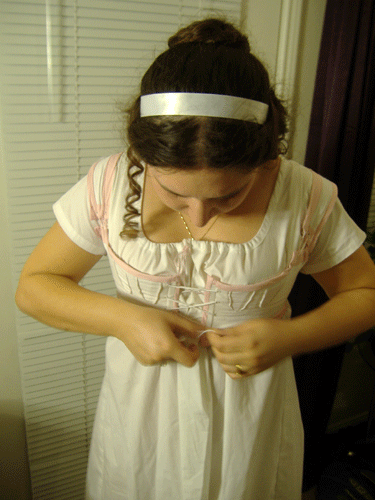
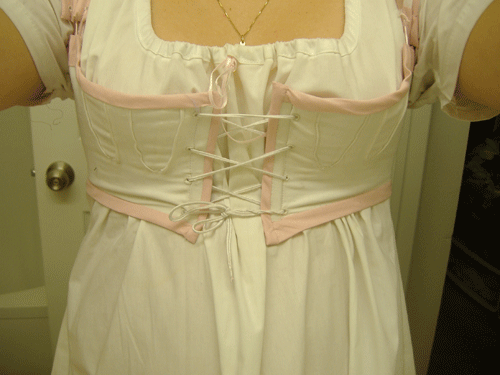

This costume was a made for the
Nanowrimo kickoff party in 2009!
I used the Simplicity Regency Underthings pattern, which was moderately challenging. I made a mock-up before I started this one because corsets have to be so perfectly fitted. I still ended up with the shoulder straps being too short,
so I just let them be short and laced them to the bodice.
It's made using two layers of heavy cotton twill, with industrial strength plastic cable-ties for boning. I machine-sewed most of it, but then attached the pink bias-tape trim by hand and hand-sewed the eyelet holes for the lacings.
The underdress/slip I made several years ago from the same pattern.


Back to Costume Gallery